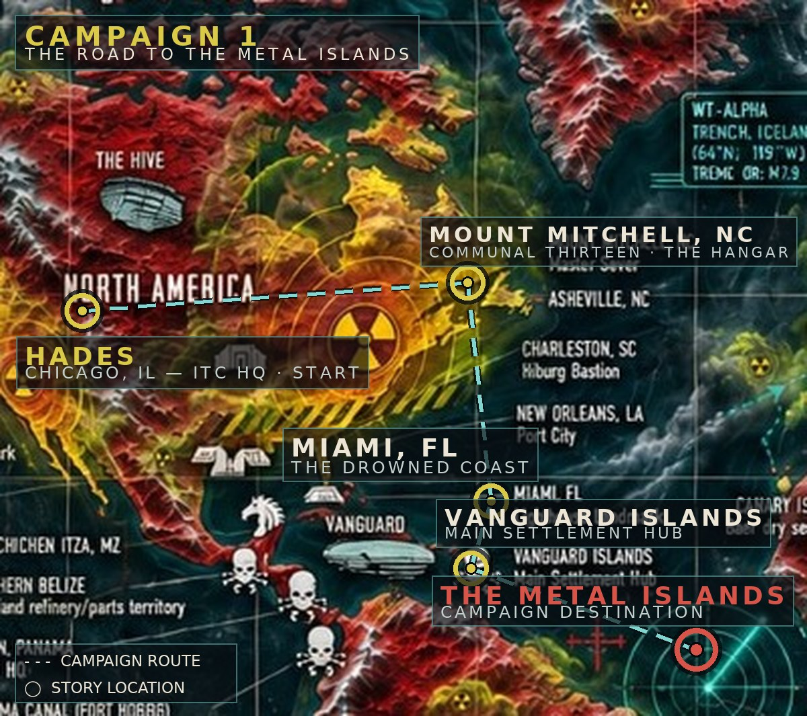

Sector Map
How to play
Command the airship. Explore the sector, find the hidden green zone, found a settlement on it, gather SCRAP / FUEL / FOOD / INTEL with drops, trade with Kestrel Colony, train replacements, and defend what you build. Win: settlement reaches Tier 2 and survives a raid. Lose: the settlement falls or every diver dies. Death is permanent — the Memorial remembers.
3/4 sector view — this sector is HADES, the Chicago wasteland. Tap / click a tile to inspect it — the camera never moves on a tap. Drag with one finger (touch) or the middle mouse button (PC) to pan; arrow keys and screen edges pan on PC. Scroll zooms where the pointer is; the + / − buttons zoom on the selected tile. F focuses the selection. The WORLD map (corner) shows the whole chart — tap it to jump the view.
THE CHARTED WORLD — ITC ATLAS

● LIVE — HADES (Chicago): ITC Headquarters and the wasteland the ship calls Hades. This sector. The campaign starts here.
ITC facilities, charted: Los Angeles — West Coast ITC · Houston — Star-Section Landmark · Galveston — Port City.
Charted places: Vanguard Islands — Main Settlement Hub · Mount Mitchell, NC · Charleston — Bastion · New Orleans — Port City · Miami — Lighthouse Landmark · Chichen Itza · Northern Belize — Iron Hand refinery / parts territory · Colón, Panama — Canal HQ · Panama Canal (Port Hobbs) — Cruiser outpost · Canary Islands · Casablanca, Morocco · Algiers, Morocco — Black-Harbor Fortress · Rio de Janeiro — Survivor Bastion · Mount Kilimanjaro — Machine Headquarters · Queensland — Knight of Coral Bastion · Mount Paektu · Mount Fuji · the Underground City + Cinderciun Station.
Factions on the chart: ITC · Horse Lords · Machine Controlled Areas · Knights Territories · Cazador Territories · Pirate Slaver Areas · The Ashikaga Clan · The Triton Legion.
Beyond Hades, the chart is knowledge, not ground you can drop on — those regions are filed for later acts. Radiation everywhere reads in the atlas's three tiers: Residual · Heavy contamination · Severe fallout.